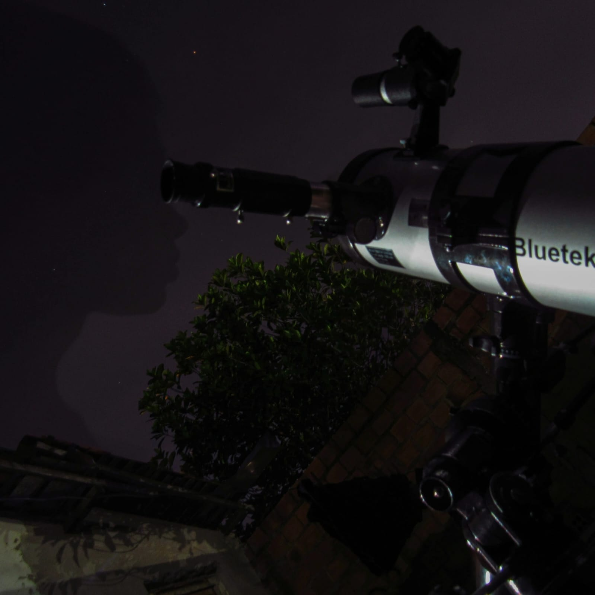

Lista de Navegação
🚀 Clique nas navegações para acessar outra página!🚀

Jhoseph William: Astrofotógrafo Amador
Sobre mim
🌌 Astrônomo e astrofotógrafo amador | 17 anos
Explorando o universo e registrando a grandiosidade do cosmos. Fascinado pela imensidão do espaço, busco
capturar a beleza das estrelas, planetas e galáxias, transformando luz em memórias celestiais.✨
EquipamentosğŸ”
Meus equipamentos são essenciais para capturar a beleza do cosmos. Uso um telescópio equatorial Bluetek
114mm f/1000, que me permite observar detalhes incrÃveis da Lua, planetas e objetos de céu profundo. Minha
Canon SX530 HS me ajuda a registrar imagens impressionantes com zoom poderoso, enquanto meu Galaxy A03
também é útil para astrofotografia básica.
Além disso, aplico técnicas como longa exposição, empilhamento de imagens e pós-processamento para revelar
detalhes ocultos em nebulosas, galáxias e aglomerados estelares. Com dedicação e aprendizado contÃnuo,
consigo extrair o máximo desses equipamentos e transformar minha paixão pelo universo em registros únicos!
✨ğŸ”
Minhas redes sociais
Compartilho minhas astrofotografias e descobertas sobre o universo nas redes sociais!
No Instagram (@astronomy_ma) e no YouTube (@astronomy_ma),
posto imagens e faço lives do céu noturno, registros da Lua, planetas e muito mais.
Além disso, interajo com outros apaixonados por astronomia, compartilho dicas sobre astrofotografia
e acompanho os fenômenos astronômicos mais incrÃveis.
Siga-me para explorar o cosmos junto comigo! 🚀✨ğŸ”
O que são astrofotografias?📷
Astrofotografia é a arte de registrar os astros e fenômenos celestes por meio da fotografia.
Utilizando câmeras, telescópios e técnicas especiais, é possÃvel capturar desde a superfÃcie da Lua e os
anéis de Saturno até galáxias e nebulosas distantes.
Mais do que simples imagens, cada foto revela detalhes invisÃveis a olho nu, permitindo explorar a imensidão
do universo de uma maneira única e fascinante.